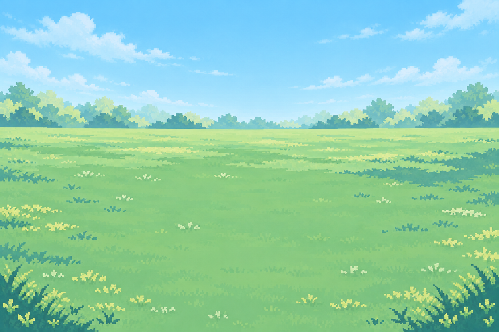
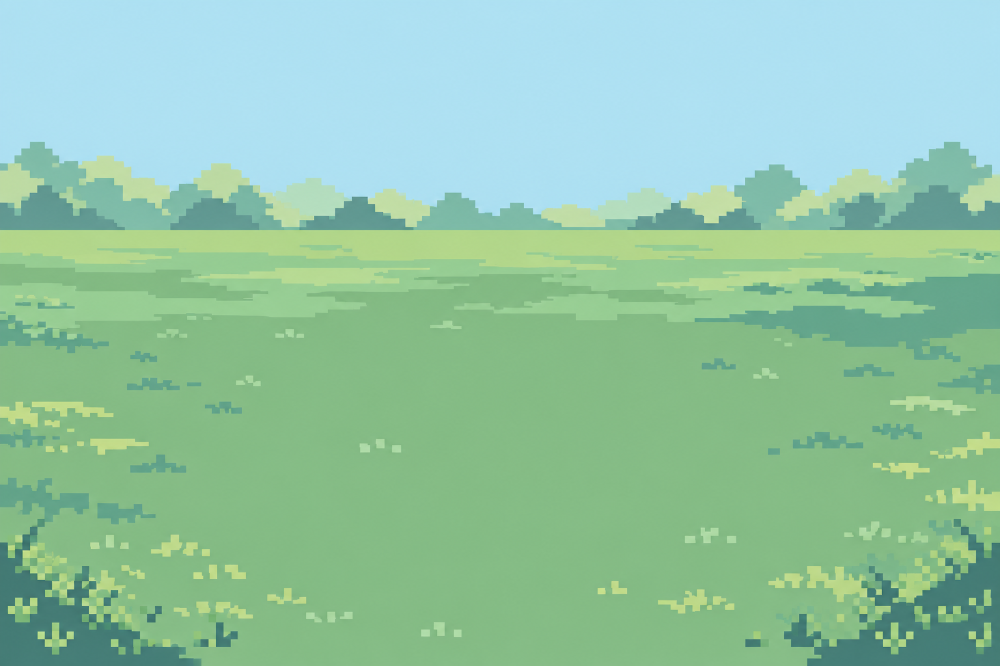
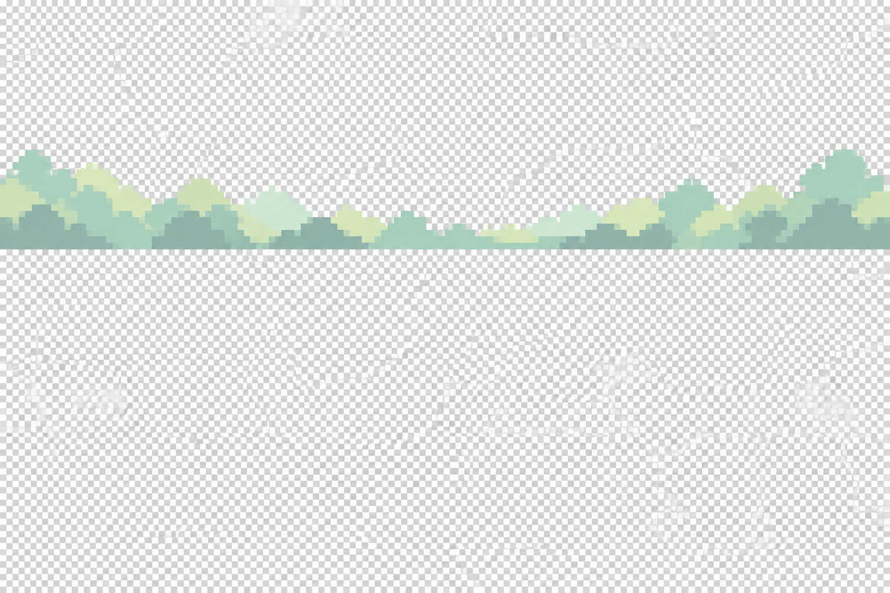
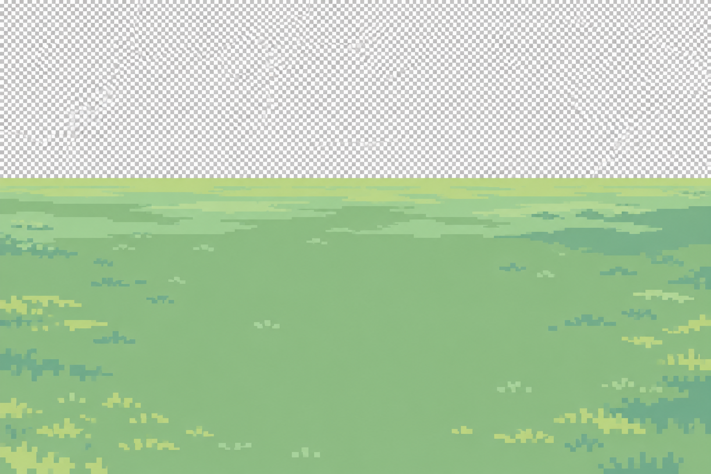
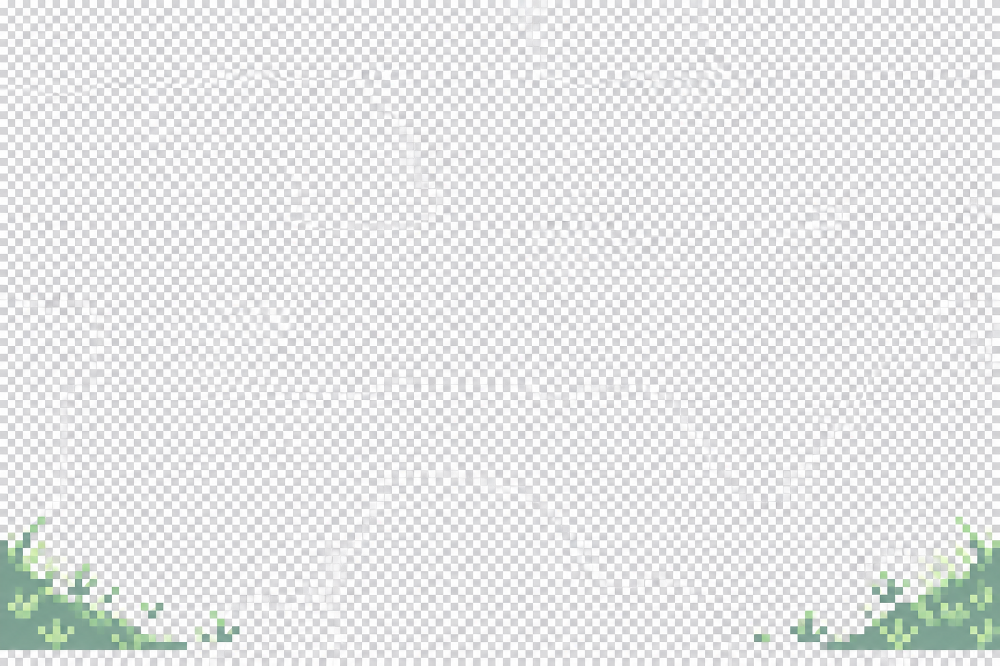

최신 수정 시안 · 픽셀을 더 촘촘하게맑은 빛과 넓은 초원
사용자가 좋아한 색감·시선·중앙 여백을 유지하고 픽셀 표현을 약 2배 세밀하게 요청한 분위기 시안입니다. 실제 배경 파일이나 정확한 픽셀 격자 검증 결과는 아닙니다.

먼 풍경의 옅은 색 · 청량한 하늘 · 더 작은 잔디 표현
이전 시안과 기술 검토
봄 초원 / 1단계 / 화풍 검토용멀리는 옅게, 가운데는 넓게.
아래는 세 시안을 참고해 이미지 도구로 다시 합성한 분위기 그림입니다. 실제 앱 화면이나 세 파일의 정확한 겹침 결과는 아닙니다.

넓은 잔디 가운데 · 옅은 먼 나무 · 짙은 모서리 풀적용 파일은 아직 미완성입니다. 투명 배경 대신 체크무늬가 그려졌고, 색 수·픽셀 격자·지평선 높이도 기준을 통과하지 못했습니다. 부드러운 명암을 줄이고 모서리 풀을 더 성기게 다듬어야 합니다.
개별 시안 3장

먼 풍경 · 적용 전 수정 필요
지면 · 적용 전 수정 필요
가까운 풀숲 · 적용 전 수정 필요소유자 화풍 판단 전입니다. 실제 화면 연결·사계절 확장·푸시는 진행하지 않았습니다.